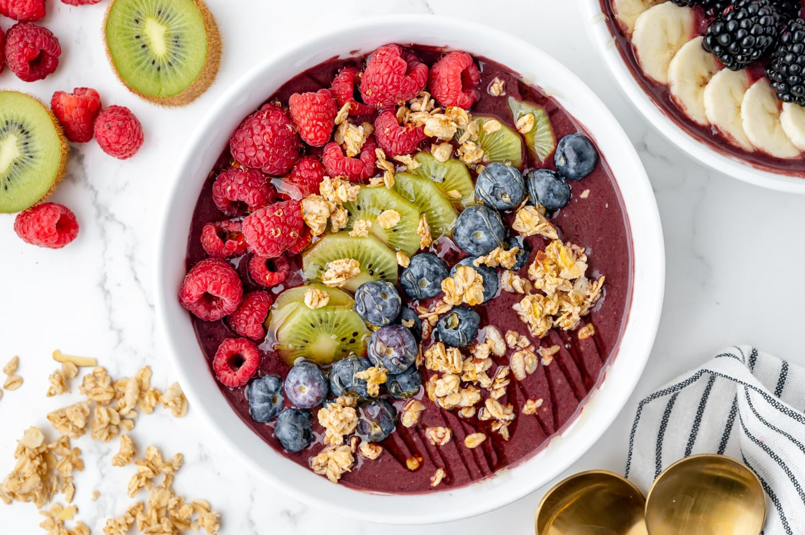

Açaí Bowl

Description
An açaí bowl is a vibrant, refreshing, and
nutrient-packed breakfast or snack that blends
frozen açaí berries into a thick, smoothie-like base.
This Brazilian-inspired dish is typically topped
with a variety of fresh fruits, granola, and seeds,
creating a delicious contrast of textures and flavors.
The rich, slightly tart flavor of the açaí pairs perfectly
with sweet fruits like bananas and berries, while the crunchy
granola and drizzle of honey or nut butter add a touch of
indulgence. Packed with antioxidants, fiber, and healthy fats, an açaí bowl is both satisfying and nourishing.
Ingredients
- Frozen açaí puree (unsweetened)
- Banana (for the base and topping)
- Mixed berries (blueberries, strawberries, etc.)
- Almond milk (or any milk of choice)
- Granola
- Chia seeds or flaxseeds
- Honey or agave syrup
- Optional: coconut flakes, peanut butter, sliced kiwi, or other fruits
Steps
- In a blender, add the frozen açaí puree, one banana, a handful of mixed berries, and a splash of almond milk.
- Blend until smooth, adding more almond milk if needed to achieve a thick, scoopable consistency.
- Pour the açaí mixture into a bowl.
- Top with sliced bananas, mixed berries, and granola.
- Sprinkle chia seeds or flaxseeds over the top for added nutrition.
- Drizzle with honey or agave syrup for sweetness.
- Add any additional toppings like coconut flakes, peanut butter, or kiwi slices as desired.
- Serve immediately while cold.
Back to home